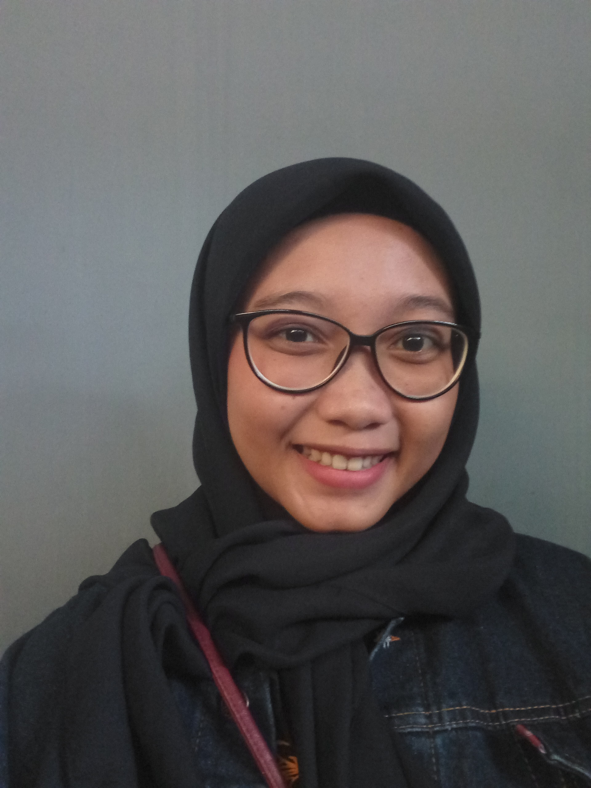
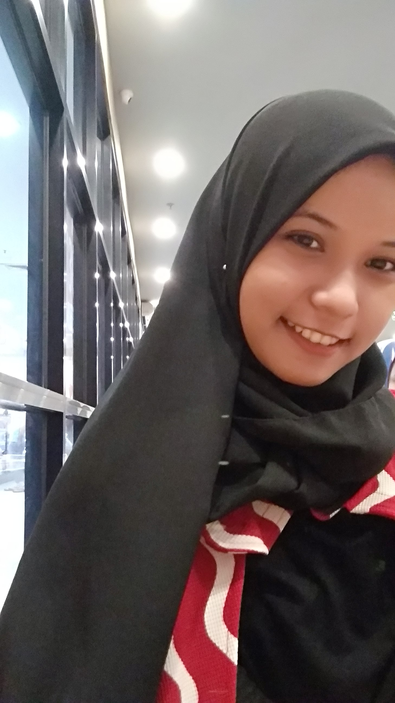
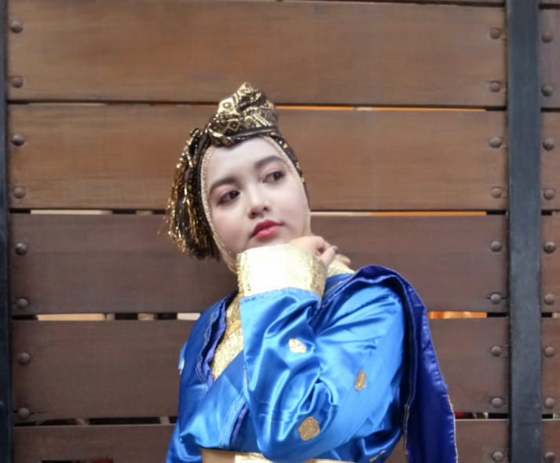

Perkenalkan kami dari kelompok MINANGNESE. Kenapa kami beri nama MINANGNESE? hal ini dikarenakan kami semua berasal dari Ranah Minang. Saat ini kami sedang menempuh studi di INSTITUT TEKNOLOGI PLN, Jakarta. Web ini dibuat guna memenuhi tugas Matakuliah WEB DESIGN, dimana pada web ini kami akan memberikan sedikit informasi tentang beberapa keunikan yang ada di Sumatera Barat.
-01-

Perkenalkan nama saya Suci Rahmadani. NIM 201731155. Saya berasal dari Kota Bukittinggi. Hal pertama yang terlintas difikiran tentang Bukittinggi ialah icon-nya yakni, JAM GADANG. Jam Gadang merupakan salah satu tempat wisata yang paling sering dikunjungi baik warga local maupun para turis. Pada Web kali ini saya akan membagikan sedikit informasi tentang Parawisata yang ada di Sumatera Barat. Informasi terletak pada halaman selanjutnya
-02-

Perkenalkan Saya Annisa Sri Wahyulia. NIM 201731247 Saya berasal dari Kota Pariaman. Hal pertama yang terlintas difikiran tentang Pariaman ialah adat istiadat nya yang jauh berbeda dari daerah lainnya. Adat Pariaman yaitu pada acara pernikahan pihak perempuan melamar pihak laki-laki. Di Pariaman, pihak perempuan membeli calon mempelai laki-laki, uang yang diserahkan kepada pihak keluarga laki-laki disebut uang hilang. Di web kali ini saya akan membahas beberapa adat yang ada di Sumatera Barat. Informasi terletak pada halaman selanjutnya
-03-

Perkenalkan Saya Kuntum Khaira Ummah. NIM 201731290 Saya berasal dari Kota Solok. Hal pertama yang terlintas difikiran tentang Solok ialah Beras Solok yang sudah terjamin akan rasa nya. Beras Solok mempunyai ciri khas rasa yang unik dan enak. Beras Solok sangat disukai baik di daerah maupun luar daerah Beras solok tidak akan ditemukan di perantauan. Berbicara tentang perantauan, kali ini saya akan membahas kenapa orang minang itu suka merantau bahkan ditiap daerah yang ada di Indonesia ada orang minangnya. Informasi terletak pada halaman selanjutnya